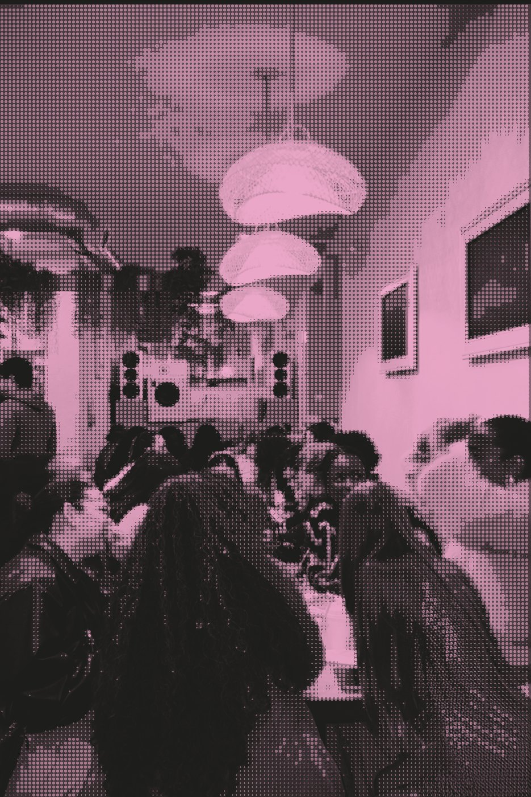

Strategy first. Partnerships that last.
Créer Social is a strategic partnerships and advisory firm. We advise founders and brands on the strategy behind their growth, represent talent with real authority, and build the partnerships that connect them to the brands, rooms and investors they belong with.

créer (verb) /kré·er/
to create.
The difference
Most firms either advise you or make introductions. We do both.
We strengthen what you've built, then connect it to what's next.
We map the whole ecosystem around your business, then turn it into a clear, actionable plan, whether the goal is clarity, revenue growth, recognition, or all three.
When the positioning matches the goal, the results start to connect.
01
See the full picture
We study the business, the brand and the opportunity, then decide exactly where you should stand.
02
Build the strategy
Positioning, priorities and the systems behind them, so your foundation can carry what comes next.
03
Open the right doors
Then we connect you to the brands, talent, rooms and investors you belong with, and negotiate the terms.
Find your door
Which door is yours?
Four doors for founders, creatives and changemakers who have built something real, in any industry. The niche is the person, not the industry. Pick the one that sounds like you for a few quick questions and a clear next step.
Selected work
Proof, not promises.
Advisory · Talent Representation
Kelly Wood“The Blowout Queen”
We advise a natural hair authority across her business, including the launch of her studio, The Atrium, and represent her for brand partnerships, which landed her an invitation to speak at Beautycon.
 View case study →
View case study →
Experiences · ERA Coalition
$88K
Raised for gender equality at "Unfinished," a Santa Monica evening honoring Gloria Steinem. We led in-kind sponsor, silent auction and guest outreach.
View case study →Brand Partnerships · US Black Chambers
An accelerator fund campaign
Creative direction, copy, content and a campaign for the US Black Chambers accelerator fund.
View case study →Advisory
Early stage to $100M+
Founders we advise range from first idea to global brands doing nine figures a year.
See our work →Featured in and partnered with




Créer Rooms
Where the right people meet.
Our own rooms, where founders, creatives and brands meet. Every Créer Social Session has sold out within 48 hours, with partners like Donna's Recipe, Bicycle Playing Cards and Tab & Chance.




About the founder

I bring together creative vision, business strategy, and a deep-rooted understanding of what makes people, brands, and ideas undeniably magnetic.
I see the full picture of what someone is building, often before they can put it into words. I know right away which brands, talent and rooms belong together, and I tend to see what's coming before it's everywhere.
I learned the business from the inside, working at some of the top luxury fashion houses, including Salvatore Ferragamo. Then I founded my own sustainable women's label, which I scaled without outside investors through wholesale and retail partnerships, featured in Cosmopolitan, Teen Vogue and on Oprah's Favorite Things.
Today I advise founders from early-stage startups to companies generating $100M+. I pull out what makes you undeniable, map the steps, and put you in the rooms where it counts.